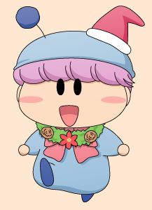
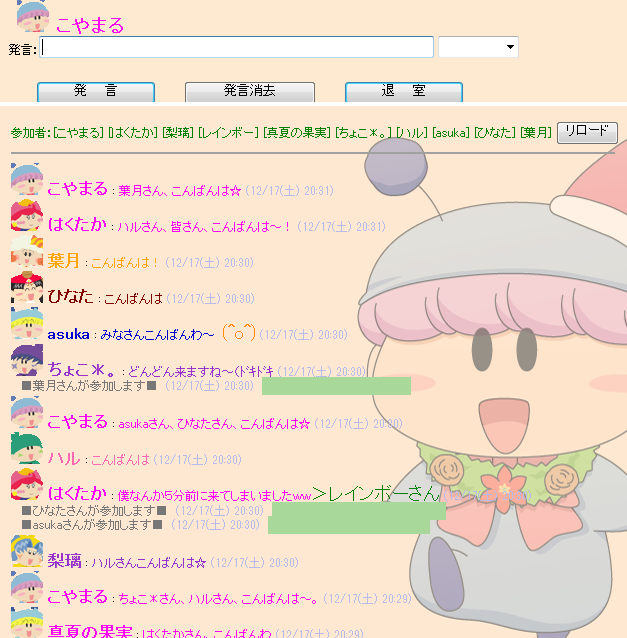
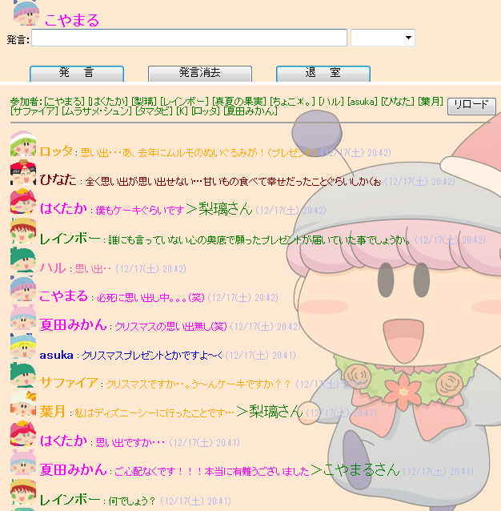
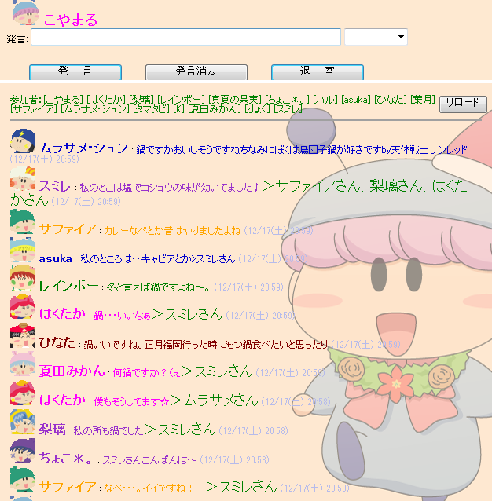
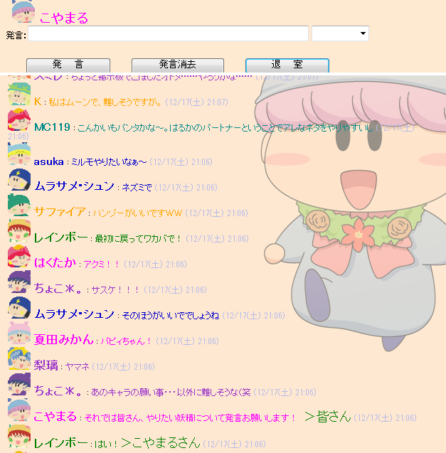
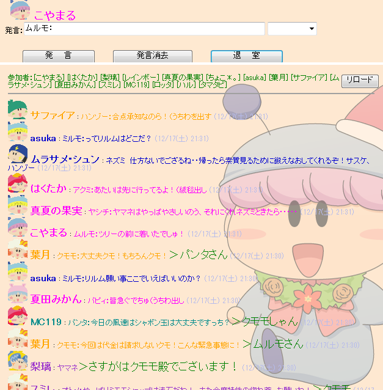
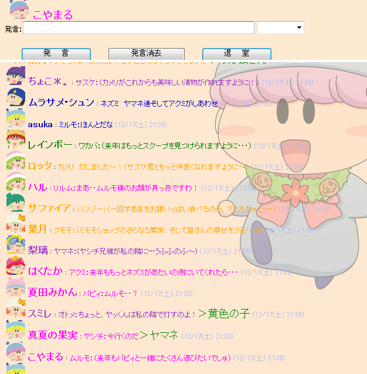
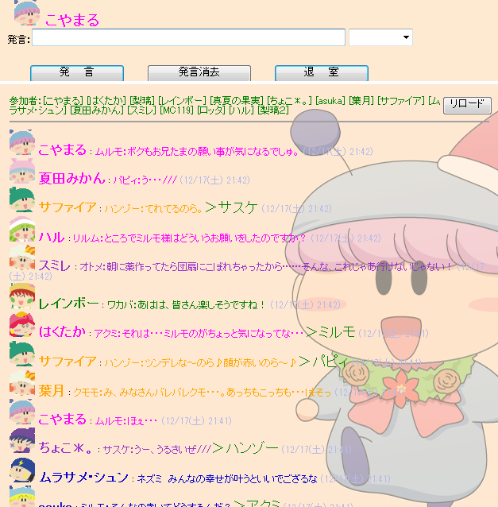
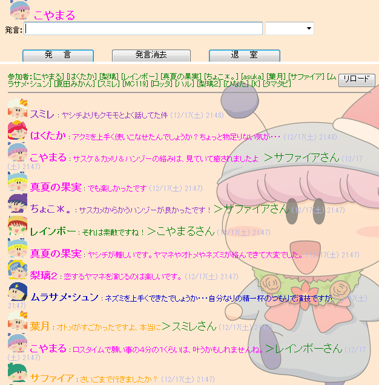
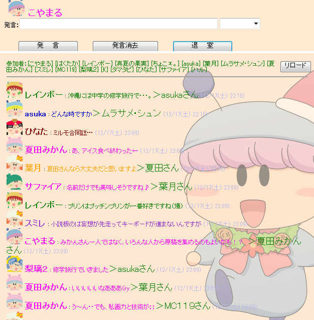

|
クリスマスチャットの記録 |
|
||
|
クリスマスチャットの記録 |
|
||
|
 ２０１１年１２月１７日（土） ２０：３０〜２２：３０に、クリスマスチャットを開催しました。年末の慌ただしい季節ではありますが、たくさんの方にご参加いただき、本当にありがとうございました。 新しいメンバーも交え、今回もたくさんのミルモ話あり、なりきりチャットあり。そして、普段は掲示板ではなかなか話題にできないようないろいろな話題でも盛り上がりましたね♪ それではチャットの模様をダイジェストでお伝えします。 (2011/12/18) |
||
↓今回ははくたかさんが参加１番乗り。
開始からまだ数分なのに、すでにたくさんの方が！

↓最初はクリスマスの思い出の話題となりました。
サンタさんを信じる信じないの話題も含めて、
皆さんの個性が感じられて面白かったです。

↓今晩の夕食の話題も・・・。
冬らしく鍋の人が多数！

↓お待ちかねのなりきりチャットの担当妖精決めシーンです。

今回はすんなり担当妖精が決まりました〜。
|
★出演者紹介（五十音順）★ アロマ：りょくさん |
|
〜今回のなりきりチャットのテーマ〜 ・今日はクリスマスイブ |
↓いよいよなりきりチャットのスタートです！
妖精らしく、いきなり何を願うか？の話題から始まりました(^^;

↓なぜか強風の設定が付き、どうやってキャンドルの炎を消さずに
丘の上まで行くかで大激論になりました(笑)。
葉月さんによる、クモモのシャボンが大活躍！

↓制限時間は少し過ぎてしまったけれど、
無事に願い事を言うことが出来ました。
オトメとヤマネのバトル(?)が熱いっ！？

↓早速願い事がバレまくりで、果たして叶うのかどうか…

↓反省会の模様です。
今回のリーダー賞は、シャボンを提案された葉月さんに決定！
妖精通販アイテムはドラえもんの道具のように便利とのこと。

↓なりきりチャット後も様々な話題で盛り上がりました♪

今回も皆さんのお力により、とても楽しいチャット会となりました。
次回のチャットは１２月３１日の遅い時間ですみませんが、
ご都合の付く方はぜひご参加よろしくお願いします〜。
 |